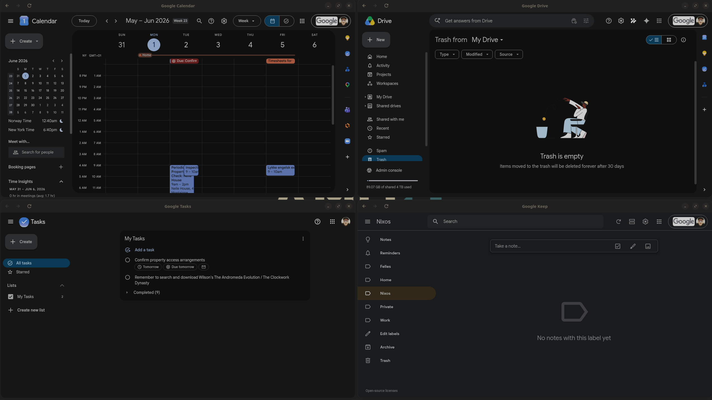
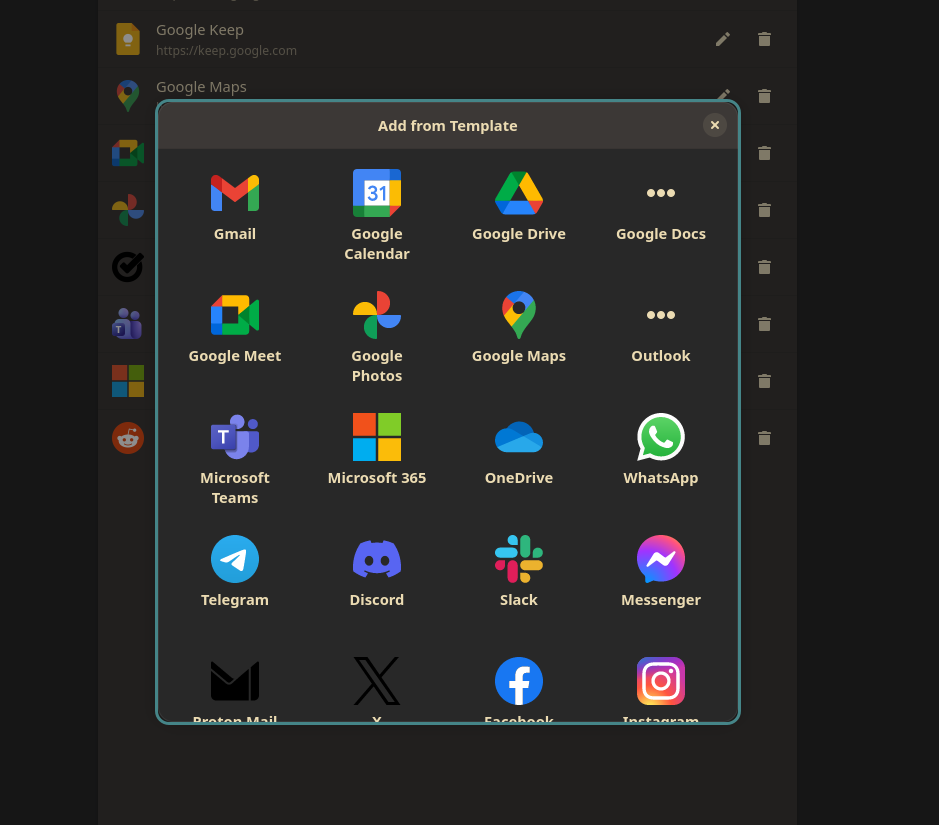
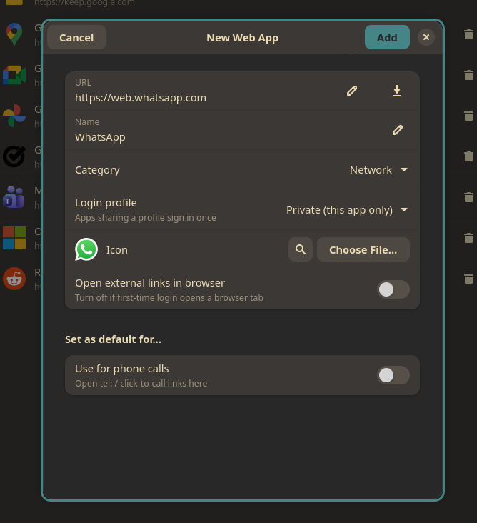
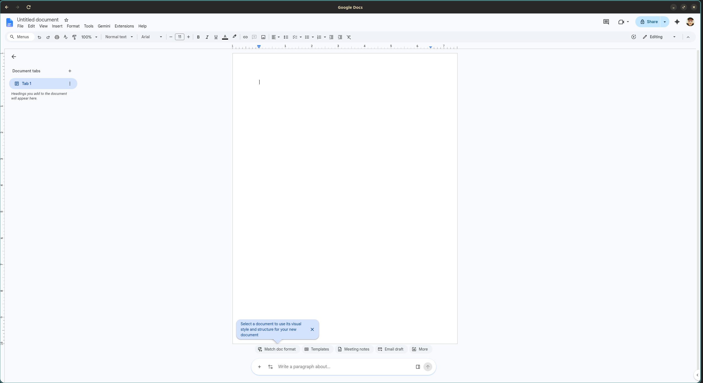
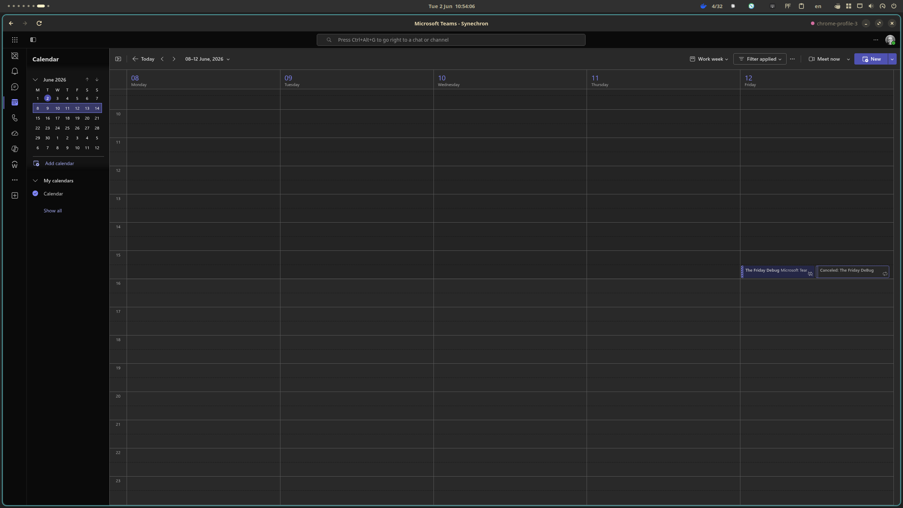
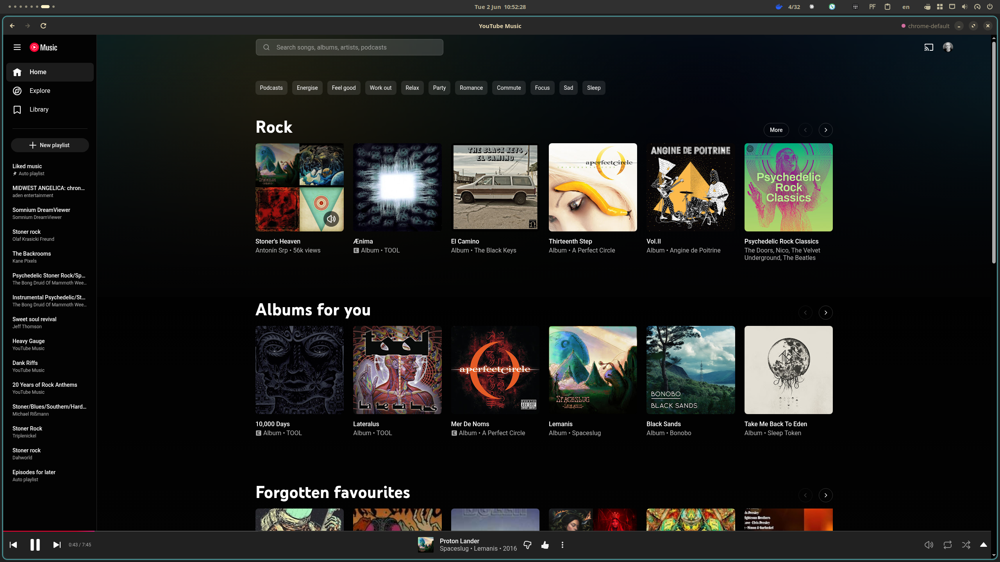
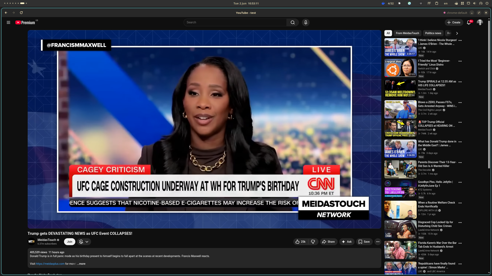

Install web apps that look and behave like native software — their own window, icon, profile and notifications. Built for GNOME, powered by Chromium.

A curated catalog of 50+ popular apps — Gmail, Teams, Spotify, WhatsApp, Notion, Figma and the major AI tools — added in a single click.
Group apps onto a profile to sign in once and run them side by side with one session, or keep each private — a colored indicator shows which identity (Work vs Private) each app uses.
Spoof the browser user agent — Windows, macOS, Mobile or a custom string — for services that gate features by operating system.
Each app gets its own libadwaita window, dock icon and Alt-Tab entry — not a browser tab.
Keep everything in-window, or send other sites to your browser — with an SSO/CAPTCHA allowlist so multi-domain sign-in (Microsoft, Google) never breaks.
Notifications carry the app's name and icon and stay in the list; background mode keeps an app running so they keep arriving after you close it.
An optional per-app blocklist strips ads and trackers from sites like YouTube — no extension needed.
Pin a site to light or dark per app, independent of your system theme. Plus custom CSS and per-app zoom that's remembered.
Make a web app your default for email, calendar or calls — even Teams/Zoom deep links that have no Linux app.
Camera, microphone and location are blocked unless you allow them per app. Downloads land in your Downloads folder.
Renders at the display's true fractional scale, so it stays sharp on scaled and fractional-scaling setups.
Crisp logos from the manifest, an online icon search, or your own file. Always a clean icon.
Chromium (CEF) rendering means Chrome-only sites and the full codec set just work.
No need to hunt for URLs or icons. Open the template gallery, click an app, choose a login profile and you're done — perfect for the web-only services Linux desktops are missing.


Share a login profile across apps to sign in once, search icons online, and set an app as your system default for email, calendar or calls — the toggles adapt to what each app can do.




# try it nix run github:olafkfreund/gnome-quick-web-apps # install nix profile install \ github:olafkfreund/gnome-quick-web-apps
A Home Manager module lets you declare web apps in your config. On NixOS, URL-scheme handlers (mailto, calendar) can't be set at runtime — opt in per app with setDefaultHandlers = true and the module writes them declaratively. See the README.
# build & install locally
flatpak-builder --user --install \
--force-clean build \
build-aux/flatpak/io.github.olafkfreund.QuickWebApps.yml